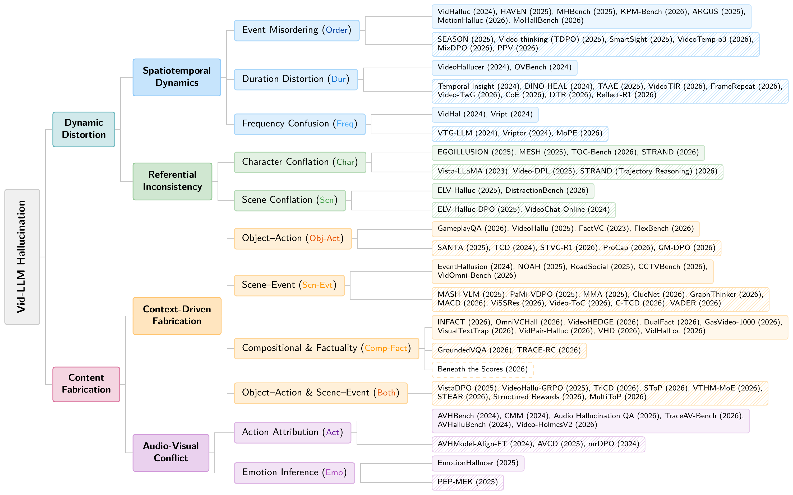

No matching papers
A reading path through video hallucination
Selected for complementary questions and approaches, not as a performance ranking.
- 01 / Orientation
Distorted or Fabricated? A Survey on Hallucination in Video LLMs
A starting vocabulary for dynamic distortion and content fabrication, connecting failure mechanisms to evaluation and mitigation.
Taxonomy overview - 02 / Question answering
VideoHallucer
Introduces the distinction between intrinsic and extrinsic hallucinations through adversarial questions about video evidence.
Video QA benchmarks - 03 / Caption evaluation
ARGUS
Complements QA-based evaluation by measuring both hallucinations and omissions in free-form video descriptions.
Captioning benchmarks - 04 / Training-free mitigation
VidHalluc & DINO-HEAL
Pairs temporal hallucination diagnosis with a concrete inference-time intervention based on visual saliency.
Training-free methods - 05 / Training-based mitigation
HAVEN & Video-thinking
Connects benchmark diagnosis to supervised reasoning and thinking-based direct preference optimization.
Methods with training - 06 / Evaluation limits
Beneath the Scores
Tests whether benchmark scores reflect the causal contribution of grounding, observation, and reasoning to downstream errors.
Evaluation analyses
